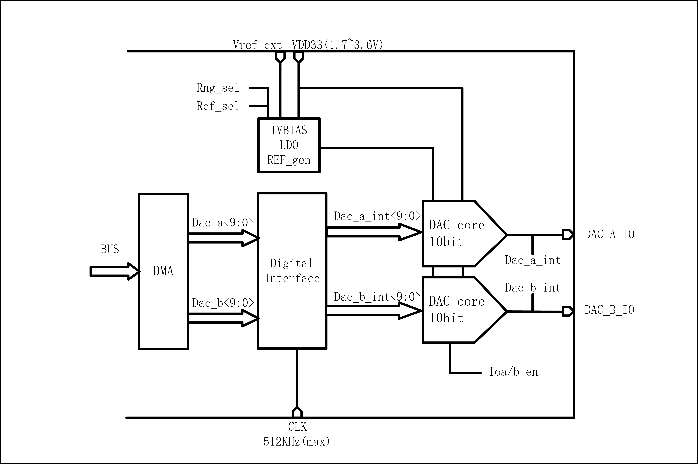

5. DAC¶
5.1. 简介¶
芯片内置一个10bits的数字模拟转换器(DAC）,FIFO深度为1，支持2路DAC调制输出。 可用于音频播放，变送器电压调制。
5.2. 主要特点¶
- DAC调制精度为10-bits
- DAC的输入时钟可选为32k、16k、8k或512k
- 支持DMA将内存搬运至DAC调制寄存器
- 支持双声道播放DMA搬运模式
- DAC的输出引脚固定为ChannelA为GPIO13,Channel为GPIO14
5.3. 功能描述¶
DAC模块基本框图如图所示。

DAC基本框图
- DAC模块支持最多两路调制输出
- DAC模块支持双声道DMA数据搬运模式
- DAC模块支持长度为32-bit的DMA数据接口，其中高16位将会调制在ChannelA的引脚上，低16位调制在ChannelB引脚。
5.4. 寄存器描述¶
| 名称 | 描述 |
| gpdac_config | GPDAC configuration |
| gpdac_dma_config | GPDAC DMA configuration |
| gpdac_dma_wdata | GPDAC DMA write data |
5.4.1. gpdac_config¶
地址： 0x40002040
| 31 | 30 | 29 | 28 | 27 | 26 | 25 | 24 | 23 | 22 | 21 | 20 | 19 | 18 | 17 | 16 |
| RSVD | CHBSEL | CHASEL | |||||||||||||
| 15 | 14 | 13 | 12 | 11 | 10 | 9 | 8 | 7 | 6 | 5 | 4 | 3 | 2 | 1 | 0 |
| RSVD | MODE | RSVD | DSMMODE | RSVD | EN2 | EN | |||||||||
| 位 | 名称 | 权限 | 复位值 | 描述 |
| 31:24 | RSVD | |||
| 23:20 | CHBSEL | R/W | 0 | Channel B Source Select 0: Reg 1: DMA 2: DMA + Filter 3: Sin Gen 4: A (The same as channel A) 5: ~A (Inverse of channel A) |
| 19:16 | CHASEL | R/W | 0 | Channel A Source Select 0: Reg 1: DMA 2: DMA + Filter 3: Sin Gen |
| 15:11 | RSVD | |||
| 10:8 | MODE | R/W | 0 | 0:32k, 1:16k, 3:8k, 4:512k(for DMA only) |
| 7:6 | RSVD | |||
| 5:4 | DSMMODE | R/W | 0 | 0:bypass, 1:dsm order=1, 2: dsm order=2 |
| 3:2 | RSVD | |||
| 1 | EN2 | R/W | 0 | GPDAC enable 2 (for B channel) |
| 0 | EN | R/W | 0 | GPDAC enable |
5.4.2. gpdac_dma_config¶
地址： 0x40002044
| 31 | 30 | 29 | 28 | 27 | 26 | 25 | 24 | 23 | 22 | 21 | 20 | 19 | 18 | 17 | 16 |
| RSVD | |||||||||||||||
| 15 | 14 | 13 | 12 | 11 | 10 | 9 | 8 | 7 | 6 | 5 | 4 | 3 | 2 | 1 | 0 |
| RSVD | DMAFM | RSVD | DMATXEN | ||||||||||||
| 位 | 名称 | 权限 | 复位值 | 描述 |
| 31:6 | RSVD | |||
| 5:4 | DMAFM | R/W | 0 | DMA TX format (Data 12-bit) 0: {A0}, {A1}, {A2}··· 1: {B0,A0}, {B1,A1}, {B2,A2}··· 2: {A1,A0}, {A3,A2}, {A5,A4}··· (Note: {20'h0,[11:0]} or {4'h0,[27:16],4'h0,[11:0]}) |
| 3:1 | RSVD | |||
| 0 | DMATXEN | R/W | 0 | GPDAC DMA TX enable |
5.4.3. gpdac_dma_wdata¶
地址： 0x40002048
| 31 | 30 | 29 | 28 | 27 | 26 | 25 | 24 | 23 | 22 | 21 | 20 | 19 | 18 | 17 | 16 |
| DMAWDA | |||||||||||||||
| 15 | 14 | 13 | 12 | 11 | 10 | 9 | 8 | 7 | 6 | 5 | 4 | 3 | 2 | 1 | 0 |
| DMAWDA | |||||||||||||||
| 位 | 名称 | 权限 | 复位值 | 描述 |
| 31:0 | DMAWDA | W | X | GPDAC DMA TX data |